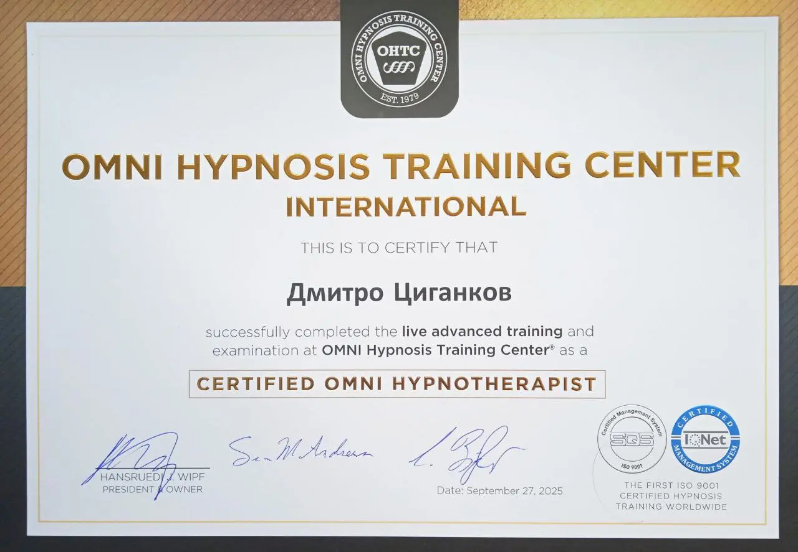
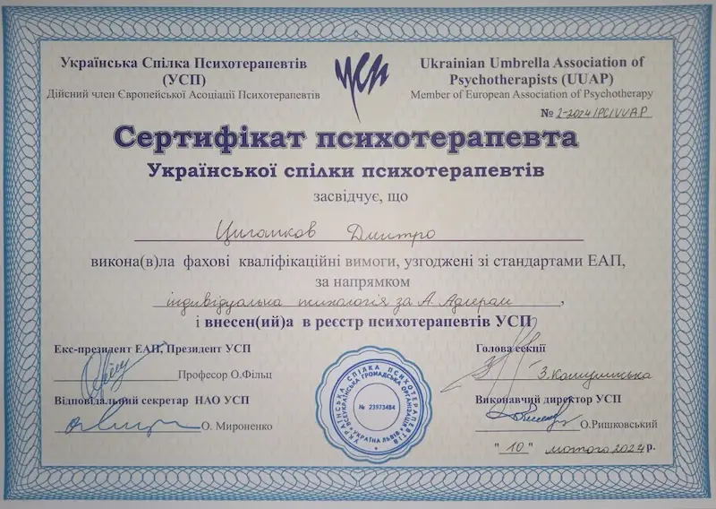
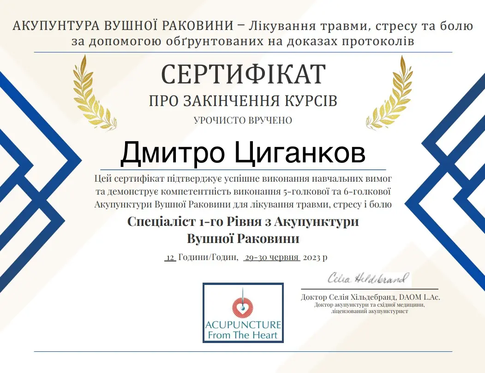

Ваш лікар у Львові
Дмитро Циганков — сертифікований лікар-нарколог, гіпнотерапевт та психотерапевт.
Мій підхід поєднує медичну точність та глибоке розуміння психології. Проводжу прийом у м. Львів, а також допомагаю пацієнтам з усіх міст України почати шлях до тверезості.

Сертифікат Гіпнотерапевта OMNI (Швейцарія)

Сертифікат Психотерапевта

Сертифікат з Акупунктури
Методи лікування алкогольної залежності
Професійні медичні підходи, адаптовані під індивідуальні потреби пацієнта.
Детоксикація
Виведення з запою
Повне очищення організму від продуктів розпаду алкоголю в комфортних умовах стаціонару. Процедура проводиться абсолютно анонімно.
- Цілодобове медичне спостереження та збалансоване харчування;
- Рекомендований курс - від 3-х діб для досягнення максимальної ефективності;
- Можлива амбулаторна допомога (формат: прийшов → отримав процедуру → пішов);
Укол (кодування) або підшивка від алкоголізму
Медикаментозний захист від вживання алкоголю шляхом введення препаратів тривалої дії.
Укол від алкоголізму (кодування) — це внутрішньом'язове введення препарату. Метод демонструє високу ефективність, але потребує утримання від алкоголю не менше 3-х діб до процедури.
Підшивка від алкоголізму — введення лікарського засобу методом малоінвазивної хірургічної процедури (невеличкий розріз під лопаткою → ввели імплант → зашили). Обов'язкова умова не вживати алкоголь 3 доби до процедури.
У роботі використовуються виключно сертифіковані препарати виробництва США.
Гіпноз (гіпнотерапія)
Використання глибинних станів розслаблення для корекції залежної поведінки за швейцарськими стандартами.
Ефективний метод позбавлення від алкогольної залежності, який полягає у формуванні у пацієнта відрази до алкоголю та глибокого внутрішнього переконання про шкідливість вживання алкогольних напоїв на підсвідомому рівні.
Під час сеансу гіпнотерапії в підсвідомості пацієнта, який перебуває в стані максимального фізичного та ментального розслаблення, фіксуються певні навіювання про шкоду, яку приносить алкоголь. В подальшому ці навіювання забезпечують негативне ставлення пацієнта до алкоголю і, як наслідок, позбавлення алкогольної залежності.
Лікар Дмитро Циганков є сертифікованим гіпнотерапевтом OMNI HYPNOSIS (Швейцарія) і успішно використовує гіпнотерапію для лікування алкоголізму та нікотинової залежності.
Акупунктура вушної раковини
Традиційний метод рефлексотерапії за протоколом ACU-DETOX для зняття тяги до алкоголю.
Голковколювання активних точок на тілі людини використовується з лікувальною метою з давніх давен.
Протокол ACU-DETOX використовується для усунення таких симптомів відміни алкоголю як:
- патологічна тяга до спиртного;
- тривожність, поганий сон;
- агресія;
- депресивні стани;
Під час процедури голковколювання виробляються ендорфіни, які допомагають знизити рівень стресу.
ТЕС-терапія (Електростимуляція)
Апаратний метод відновлення вольових функцій мозку та нормалізації психоемоційного стану.
Префронтальна кора головного мозку відповідає за вольове напруження (сила волі), увагу та мотивацію.
Подразнення префронтальної кори головного мозку слабким електричним струмом за допомогою спеціального апарату дозволяє ефективно лікувати симптоми, що супроводжують алкогольну залежність-депресивні та тривожні стани, порушення сну.
Психотерапія у м. Львів
Глибока індивідуальна робота з психологічними причинами залежності в анонімному форматі.
Робота з психотерапевтом дозволяє:
- Розібратися в глибинних причинах формування залежності;
- Знайти індивідуальні шляхи вирішення проблеми для кожного пацієнта;
- Сформувати нові поведінкові звички для життя без алкоголю;
Тест на залежність (Львів/Україна)
Пройдіть коротку анонімну перевірку свого стану прямо зараз.
Завантаження...
Результат аналізу
Контакти та розташування
Прийом проводиться за попереднім записом у сучасній клініці у м. Львів.
Адреса клініки:
Medical Home Clinic +
проспект
Чорновола, 55
м. Львів
Графік прийому:
За попереднім записом